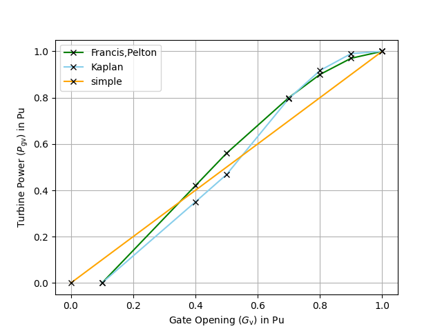

GovHydro4
Context
The following information has been gathered from [1], [2] and [3].
In a hydroelectric power plant, the governing system’s main function is to control the speed or load of the turbine by the means of gate opening. The prime movers convert the kinetic energy of the water into mechanical energy, which is then converted into electrical energy by a synchronous generator. The governor monitors the speed of the turbine and adjusts the position of the gates that control the water flow to keep the speed steady. It does this by comparing the actual speed with the desired speed and making changes accordingly [1].
For more details also see [4] and [5].
Types of turbines
Turbines used in the hydro power plants are mainly classified into two types [1]:
- Impulse turbines like the Pelton wheel and simple turbine, are used for high heads, typically 300 meters or more. They work by directing high-velocity water jets onto spoon-shaped buckets on a runner, converting potential energy to kinetic energy entirely at atmospheric pressure.
- Reaction turbines such as the Francis and propeller turbines work with water’s kinetic and potential energy. In the Francis turbine, water flows axially through guide vanes, impacting the runner tangentially, suitable for heads up to 360 meters.
These distinctions are crucial for understanding the dynamics of hydro governors.
Model use, assumptions, validity domain and limitations
GovHydro4 is a general model that can be used to represent simple, Francis/Pelton or Kaplan turbines [3].
The model is a positive-sequence RMS model, hence it assumes symmetrical operating conditions and neglects high-frequency dynamics. This type of model is often used in large-scale stability studies, for which it reflects the relevant phenomena. It is not a detailed physical model of the unit. Also for some stability phenomena (e.g. resonance stability) this model is not sufficient and EMT models or other approaches may be necessary.
The gates operate within a range of 0 to 1 PU, transitioning from fully closed to fully open. At zero power, the gates maintain a position greater than zero, and typically remain below 1 PU when power is at 1 PU. The operating limits are defined by Gmax and Gmin.
The dynamic analysis of hydraulic turbines is typically based on the following assumptions regarding the stability of the water column [1]:
- Hydraulic resistance is considered negligible.
- The penstock pipe is assumed to be inelastic, and the water is treated as incompressible.
- Water velocity is directly proportional to the gate opening and to the square root of the net head.
- Turbine output power is directly proportional to the product of the head and the volumetric flow rate.
Model description
- The curve defined in Figure 1 represents the relationship between the flow of water \[q\] through the turbine and the stroke \[G\] of the gate actuating servomotor.
Gate-opening-to-turbine-power characteristic:
- Simple turbine: The gate opening-to-turbine power characteristic is represented by a line with a slope of At and an intercept of Qnl, as depicted in the GovHydro4SimpleHydroTurbine diagram. This curve is proportional to turbine power, with the constant of proportionality determined by the turbine gain.
- Francis/Pelton: The non-linear gate opening-to-turbine power characteristic is described by points in the green curve Figure 1.
- Kaplan: This model uses points through the blue curve from the Figure 1 to define the non-linear characteristics of gate opening-to-turbine power and gate opening-to-blade angle.

Figure 1: The gate-head-flow-power characteristics for a kaplan turbine model [3]
Table 1: Gate head flow characteristics
| \[G_\mathrm{v}\] | \[P_\mathrm{gv}\] (Francis) | \[P_\mathrm{gv}\] (Kaplan) | \[P_\mathrm{gv}\] (Simple) |
|---|---|---|---|
| 0 | 0 | 0 | 0 |
| 0.1 | 0 | 0 | 0.1 |
| 0.4 | 0.42 | 0.35 | 0.4 |
| 0.5 | 0.56 | 0.468 | 0.5 |
| 0.7 | 0.8 | 0.796 | 0.7 |
| 0.8 | 0.9 | 0.917 | 0.8 |
| 0.9 | 0.97 | 0.99 | 0.9 |
| 1 | 1 | 1 | 1 |
[!NOTE]
The output signal of the lookup-tabl actually represents a flow rate, not a power value (\[q_\mathrm{f}\] in Figure 2). Since in [3] the power variable \[P_\mathrm{gv}\] is used instead, this is also used here in Figure 1 and Table 3
Transient droop
Hydro power turbines have a unique behavior, where adjusting the gate position for controlling water flow results in an immediate but temporary change in turbine power output to the opposite direction, known as non-minimum phase behavior. To address this, a mechanism called transient droop compensation is employed. This mechanism, which shown in the upper half of the Figure 2, involves rate feedback or transient gain reduction, which slows down or limits gate movement until water flow and power output have had time to adjust. As the system stabilizes, the governor returns to normal operation with permanent droop \[R_\mathrm{perm}\], responding more sensitively to speed deviations to maintain steady-state operation. This compensation mechanism ensures stable control performance, crucial for maintaining the stability of hydroelectric power plants [1].
Dead bands
There is a difference between the intentional deadband (\[\Delta \omega_\mathrm{db}\], \[\Delta \omega_\mathrm{\varepsilon}\]) and the unintentional deadband (\[\Delta P_\mathrm{db}\]). The former is intentionally added to the control to prevent continuous adjustment of the mechanical power in response to minor frequency deviations. It has a fixed region with zero output. The latter implements a hysteresis around the operating point, representing backlash of the mechanical actuator [5].
Model schema
The block diagram of GovHydro4 is depicted in Figure 2.

Figure 2: Control diagram
Parameters
Per-unit parameters are on base of \[P_\mathrm{base}\], which is normally the capability of the turbine in MW. Per-unit angular velocity parameters are based on nominal frequency.
Table 2: Parameters
| name | type | unit | IEC name | description | typical value |
|---|---|---|---|---|---|
| \[A_\mathrm{turb}\] | float | pu | at | Turbine gain | 1.2 |
| \[B_\mathrm{max}\] | float | pu | bmax | Maximum blade adjustment factor | see Table 3 |
| \[\Delta \omega_\mathrm{\varepsilon}\] | float | pu | eps | Intentional deadband discontinuity step size | 0 |
| \[\Delta \omega_\mathrm{db}\] | float | pu | db1 | Intentional deadband width | 0 |
| \[\Delta P_\mathrm{db}\] | float | pu | db2 | Unintentional dead-band | 0 |
| \[D_\mathrm{turb}\] | float | pu | dturb | Turbine damping factor | see Table 3 |
| \[G_\mathrm{max}\] | float | pu | gmax | Maximum gate opening | 1 |
| \[G_\mathrm{min}\] | float | pu | gmin | Minimum gate opening | 0 |
| \[h_\mathrm{dam}\] | float | pu | hdam | Head available at dam | 1 |
| \[M_\mathrm{set}\] | int | - | model | The kind of model being represented (simple, Francis/Pelton or Kaplan). | - |
| \[q_\mathrm{nl}\] | float | pu | qnl | No-load flow at nominal head | see Table 3 |
| \[R_\mathrm{perm}\] | float | pu | rperm | Permanent droop | 0.05 |
| \[R_\mathrm{temp}\] | float | pu | rtemp | Temporary droop | 0.3 |
| \[T_\mathrm{blade}\] | float | s | tblade | Blade servo time constant | 100 |
| \[T_\mathrm{g}\] | float | s | tg | Gate servo time constant | 0.5 |
| \[T_\mathrm{p}\] | float | s | tp | Pilot servo time constant | 0.1 |
| \[T_\mathrm{r}\] | float | s | tr | Dashpot time constant | 5 |
| \[T_\mathrm{w}\] | float | s | tw | Water inertia time constant | 1 |
| \[U_\mathrm{c}\] | float | pu | uc | Max gate closing velocity | -0.2 |
| \[U_\mathrm{o}\] | float | pu | uo | Max gate opening velocity | 0.2 |
Typical values for the parameters that vary with turbine type
Table 3: Turbine type dependent parameters
| Parameter name | Simple | Francis | Pelton | Kaplan |
|---|---|---|---|---|
| \[B_\mathrm{max}\] | 0 | 0 | 0 | 1.1276 |
| \[D_\mathrm{turb}\] | 0.5 | 1.1 | 1.1 | 1.1 |
| \[q_\mathrm{nl}\] | 0.08 | 0 | 0 | 0 |
[!NOTE]
The simple turbine model uses a proportional turbine characteristic without no-load offset, hence the \[q_\mathrm{nl}\] = 0.08 pu are to compensate for that simplification. In the other turbine models, no-load flow is already included in their characteristic (see Figure 1), hence \[q_\mathrm{nl}\] = 0 pu. In the model the turbine dependent parameters are chosen automatically by selecting a turbine type.
Variables
Inputs
Table 4: Inputs
| name | type | unit | IEC name | description |
|---|---|---|---|---|
| \[\Delta\omega\] | float | pu | \[\omega\] | rotor speed |
| \[\omega_\mathrm{ref}\] | float | pu | \[\omega_\mathrm{ref}\] | rotor speed reference |
| \[P_\mathrm{ref}\] | float | pu | pref | Reference Power demand |
[!NOTE]
During initialization \[P_\mathrm{ref}\] is calculated. Its value does not correspond to the power output. This approach has historical roots: Initially, a manual actuator for \[P_\mathrm{ref}\] was adjusted without a display to show the precise value. Operators would move the actuator while observing the turbine’s output power, so the exact value of \[P_\mathrm{ref}\] was not critical.
Outputs
Table 5: Outputs
| name | type | unit | IEC name | description |
|---|---|---|---|---|
| \[P_\mathrm{m}\] | float | pu | Pm | mechanical power |
Equations & algorithm
The initial values for the system’s states are calculated from the initial mechanical power \[P_\mathrm{m\,0}\] Pu.
The lookup-table \[L_\mathrm{turb}\] of the turbine characteristics is used in the model to translate gate opening \[G\] to water flow \[q\]. Its inverse lookup-table \[L^{-1}_\mathrm{turb}\] is used in the following equations for initialization. It translates water flow to gate opening: \[G = L^{-1}_\mathrm{turb}(q)\].
Initial equations
The variable \[G_\mathrm{0}\] is used for an easier initialization.
\[G_\mathrm{0} = L^{-1}_\mathrm{turb}\left(P_\mathrm{m\,0} / A_\mathrm{turb} + Q_\mathrm{nl}\right)\]
\[P_\mathrm{ref\,0} = G_\mathrm{0} \cdot R_\mathrm{perm}\]
\[x_\mathrm{Tw\,0} = P_\mathrm{m0} / A_\mathrm{turb} + Q_\mathrm{nl}\]
\[x_\mathrm{G\,0}= G_\mathrm{0}\]
\[x_\mathrm{tfRTemp\,0} = 0\]
\[x_\mathrm{Tp\,0} = 0\]
\[P_\mathrm{ref\,0} = G_\mathrm{0} \cdot R_\mathrm{perm}\]
Open source implementations
This model has been successfully implemented in :
| Software | URL | Language | Open-Source License | Last consulted date | Comments |
|---|---|---|---|---|---|
| Open Modelica / Dynawo | Dynawo | modelica | MPL v2.0 | 30/10/2024 | For modeling assumptions and test results, see Dynawo repository. |